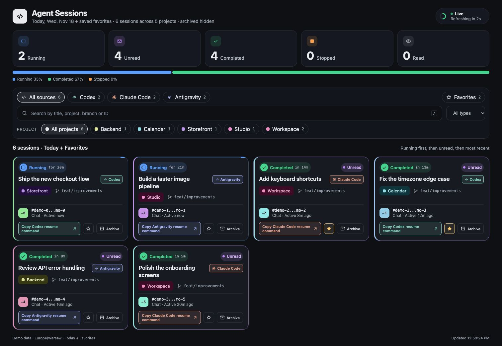
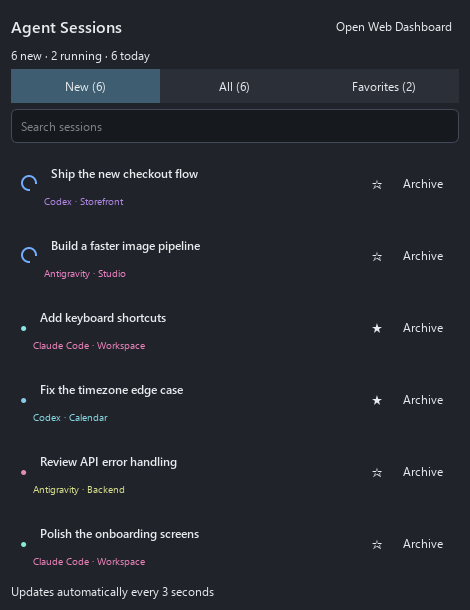

macOS
macOS 13 or later
Apple Silicon Intel Mac- Open the disk image.
- Drag Agent Sessions to Applications.
- Launch it and click the menu bar icon.
CODEX · CLAUDE CODE · ANTIGRAVITY
One quiet place to see what's running, what's ready,
and what you want to come back to.
macOS & Windows · Free and open source · No account required

The real dashboard, with fictional demo sessions.
LESS CHECKING. MORE CONTEXT.
Keep the compact panel close. Open the full dashboard when you want the bigger picture.
New shows running work and finished results awaiting review. All keeps the rest in reach.
Star a session and it stays across days. Archive it and it stays hidden here, even if the source app refuses.
A native notification tells you when a run finishes. The tray stays closed until you open it.

ON YOUR COMPUTER. UNDER YOUR CONTROL.
Agent Sessions reads local session metadata. No cloud account, API key, telemetry, or transcript upload. The only built-in outbound request checks GitHub for app updates.
FROM DOWNLOAD TO DASHBOARD
The runtime is included. Just bring your coding agents.
macOS 13 or later
Apple Silicon Intel MacWindows 10 / 11 · x64
Download for WindowsA per-user installer.
No administrator access needed.
Initial builds are unsigned previews. Your OS may display an unknown-publisher warning. Review the release notes and checksums before installing. App updates are suggested automatically; you choose when to download and install.
Local Codex desktop sessions, Claude Code CLI and desktop metadata, and Antigravity App 2.x's local summary index. Today's activity uses your local timezone. Favorites remain visible across days. Remote hosts, WSL sessions, and older protobuf-only Antigravity IDE storage are not scanned.
No. Running sessions are hidden locally while work continues. For idle sessions, source archival is attempted where supported. Local hiding always persists independently, including in Favorites.
Codex and Claude open through their app links. Antigravity copies its official CLI resume command for you to paste in a terminal. The tray tracks reviewed results locally where the source has no read receipt.
The app checks stable GitHub releases on startup and every six hours. When a newer version has a matching installer, a notification and tray menu action offer the download. Reinstalling preserves your favorites and local archives.
Yes. All source, tests, packaging scripts, and release workflows are on GitHub under the MIT license. Dependencies retain their own licenses.